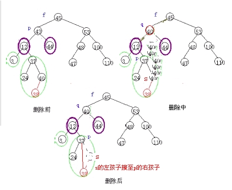
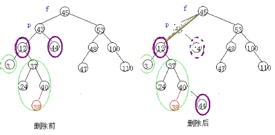

第三十一课
本课主题： 动态查找表
教学目的： 掌握二叉排序树的实现方法
教学重点： 二叉排序树的实现
教学难点： 构造二叉排序树的方法
授课内容：
一、动态查找表的定义
动态查找表的特点是：
表结构本身是在查找过程中动态生成的，即对于给定值key,若表中存在其关键字等于key的记录，则查找成功返回，否则插入关键字等于key的记录。以政是动态查找表的定义：
ADT DymanicSearchTable{
数据对象Ｄ：Ｄ是具有相同特性的数据元素的集合。各个数据元素均含有类型相同，可唯一标识数据元素的关键字。
数据关系Ｒ：数据元素同属一个集合。
基本操作Ｐ：
InitDSTable(&DT);
DestroyDSTable(&DT);
SearchDSTable(DT,key);
InsertDSTable(&DT,e);
DeleteDSTable(&DT,key);
TraverseDSTable(DT,Visit());
}ADT DynamicSearchTable
二、二叉排序树及其查找过程
二叉排序树或者是一棵空树；或者是具有下列性质的二叉树：
１、若它的左子树不空，则左子树上所有结点的值均小于它的根结点的值；
２、若它的右子树不空，则右子树上所有结点的值均大于它的根结点的值；
３、它的左、右子树了分别为二叉排序树。
如果取二叉链表作为二叉排序树的存储结构，则上述查找过程如下：
BiTree SearchBST(BiTree T,KeyType key){
if(!T)||EQ(key,T->data.key)) return (T);
else if LT(key,T->data.key) return (SearchBST(T->lchild,key));
else return (SearchBST(T->rchild.key));
}//SearchBST
三、二叉排序树的插入和删除
二叉排序树是一种动态树表，其特点是，树的结构通常不是一资生成的，面是在查找过程中，当树中不存在关键字等于给定值的结点时再进行插入。新插入的结点一定是一个新添加的叶子结点，并且是查找不成功时查找路径上访问的最后一个结点的左孩子或右孩子结点。
Status SearchBST(BiTree T,KeyType key,BiTree f,BiTree &p){
if(!T) {p=f;return FALSE;}
else if EQ(key,T->data.key){ p=T;return TRUE;}
else if LT(key,T->data.key) SearchBsT(T->lchild,key,T,p);
else SearchBST(T->rchild,key,T,p);
}//SearchBST
插入算法：
Status InsertBST(BiTree &T,ElemType e){
if(!SearchBST(T,e.key,NULL,p){
s=(BiTree)malloc(sizeof(BiTNode));
s->data=e;s->lchild=s->rchild=NULL;
if(!p) T=s;
else if (LT(e.key,p->data.key) p->lchild=s;
else p->rchild=s;
return TRUE;
}
else return FALSE;
}//InsertBST
在二叉排序树中删除一个节点的算法：
Status DeleteBST(BiTree &T,KeyType key){
if(!T) return FALSE;
else{
if EQ(key,T->data.key) Delete(T);
else if LT(key,T->data.key) DeleteBST(T->lchild,key);
else DeleteBST(T->rchild,key);
return TRUE;
}
}
void Delete(BiTree &p){
if(!p->rchild){
q=p; p=p->lchild; free(q);
}
else if(!p->lchild){
q=p;p=p->rchild; free(q);
}
else{
//方法一：如图示

q=p;s=p->lchild;
while(s->rchild){q=s;s=s->rchild}//转左，然后向右到尽头
p->data=s->data; //s指向被删结点的"前驱"
if(q!=p)q->rchild=s->lchild; //重接*q的右子树
else q->lchild=s->lchild;//重接*q的左子树 （方法一结束）
//或可用方法二：
//q=s=(*p)->l;
//while(s->r) s=s->r;
//s->r=(*p)->r;
//free(*p);
//(*p)=q;

}
}
四、总结